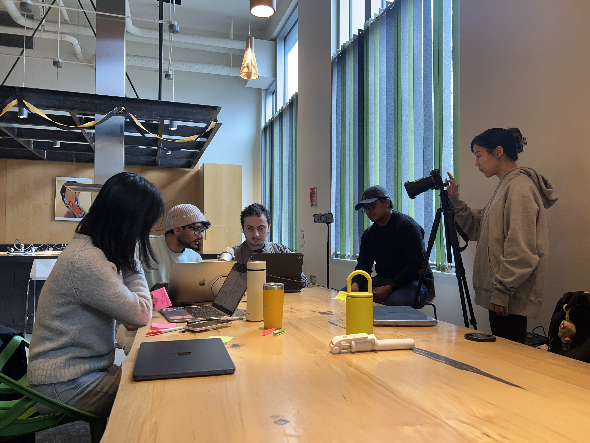
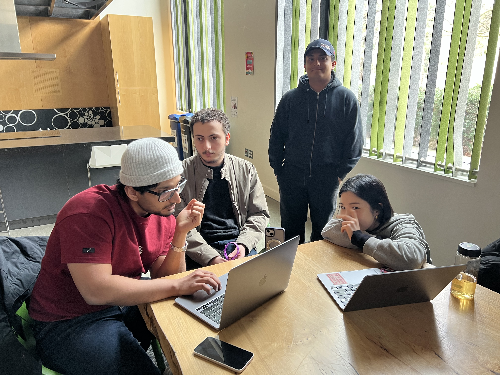

01 — Capture
Start from wherever you are.
The student presses Option+Space. Math Recall reads the equation from the app they’re in — a PDF, a text editor, a webpage — and builds a structure they can explore.
⌥+Space
Accessibility
For blind and low-vision students, screen readers turn math into a single unbreakable sentence. Math Recall gives it back its structure — so every part of every equation is reachable, speakable, and ready to use.
x2 + 3x + 5 = 20
Walk every node by structure
Number, side, number — done
Built for the screen reader
No language model at runtime
A student working through a problem set encounters an equation. They need one piece of it. Here’s what that looks like.
The student presses Option+Space. Math Recall reads the equation from the app they’re in — a PDF, a text editor, a webpage — and builds a structure they can explore.
VoiceOver announces each level. “Left side, three items.” “x squared, power node.” The student always knows where they are — and can back out or go deeper at any point.
Press Space. The selected piece appears at the cursor in whatever app they were writing in. They never left their editor. The whole thing took under two seconds.
A sighted student glances at an equation and instantly isolates any piece. A blind student hears the whole thing, start to finish, every time. Math Recall closes that gap.
A screen reader announces ∫₀¹ x² dx start to finish. There’s no way to skip ahead, go back to the exponent, or pull out a single piece to reuse.
No structure · No selection
The same expression becomes a tree the student can walk. Each part is named, reachable, and spoken aloud. Step in, step out, step sideways.
A student who depends on a screen reader needs to trust that pressing the same keys gives the same result every time. Math Recall has no language model at runtime. It uses a recursive descent parser — the same technique compilers have relied on for decades.
Press 1, L, 2 today and you get the same piece of the equation tomorrow. That kind of reliability isn’t a technical preference — it’s an accessibility requirement.
(x+3)/2, d/dx, sin(x)) resolved by fixed rules, not guesses.


Most software adds accessibility after the product is done. Math Recall started there. Every interaction was designed for someone who will never see the interface.
There is no mouse interaction. No drag-and-drop. No visual canvas. The only question behind every decision: can this person tell where they are in the equation, and get the piece they need?
Swift, SwiftUI, Carbon, AVSpeech, Accessibility API. Nothing you don’t already trust your computer with.
MIT licensed, built at the University of Washington, and designed for the students who need it most. Download it, build it, improve it.